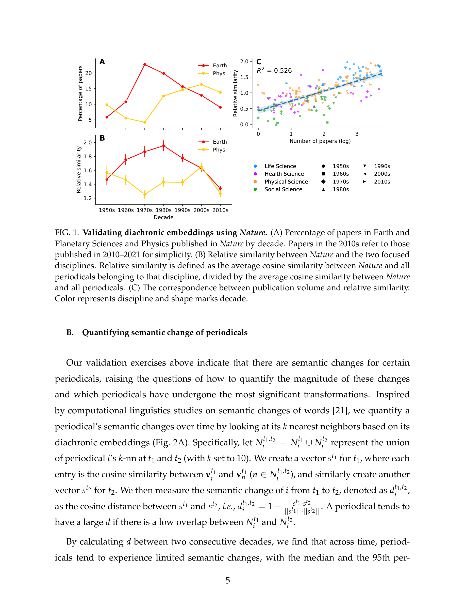
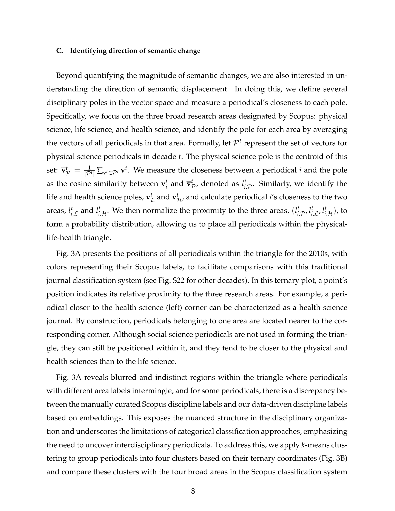
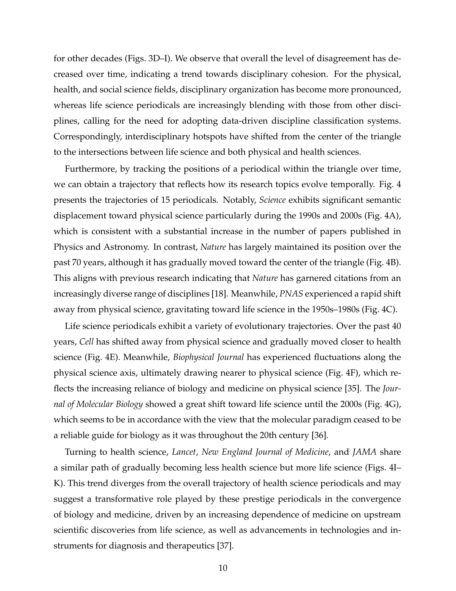
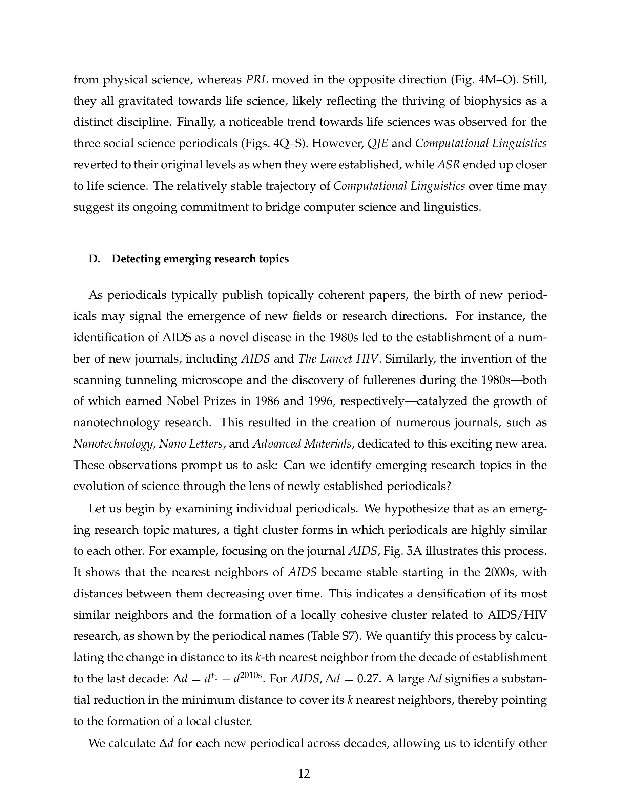

Figure 1
저자: Zhuoqi Lyu, Qing Ke | 날짜: 12/2025 | Journal: Chaos, Solitons & Fractals | DOI: 10.1016/j.chaos.2025.117295
Figure 1
학술 저널의 통시적(diachronic) 임베딩을 통해 1950년대부터 2010년대까지 과학의 구조 변화를 추적한 결과, 대부분의 저널은 전문화(specialization) 경향을 보이지만 생명과학 저널은 오히려 학제간 융합이 증가하고 있으며, 신규 저널의 로컬 클러스터 형성을 모니터링함으로써 AIDS 연구, 나노기술 등 신흥 연구 주제를 식별할 수 있다.

Figure 2

Figure 3

Figure 4

Figure 5
전산언어학의 통시적 단어 임베딩(diachronic word embedding) 기법을 학술 저널 수준에서 과학의 진화 분석에 최초로 체계적으로 적용한 점이 독창적이다. 특히 저널을 Physical-Life-Health 삼각형에 매핑하여 개별 저널의 시간적 궤적을 시각화하는 방법론은 정적 과학 지도의 한계를 효과적으로 극복한다. 또한 신규 저널의 로컬 클러스터 응집도(delta-d)를 통해 신흥 연구 주제를 감지하는 접근법은 새롭고 직관적이다.
총평: 전산언어학의 통시적 임베딩을 과학 진화 분석에 창의적으로 적용하여 저널 수준의 의미 변화 추적, 학제간성 동태 분석, 신흥 주제 감지라는 다차원적 분석 프레임워크를 제시한 견실한 연구이나, 시간 해상도의 거칠기와 신흥 주제 감지의 정량적 검증 부재가 아쉽다.